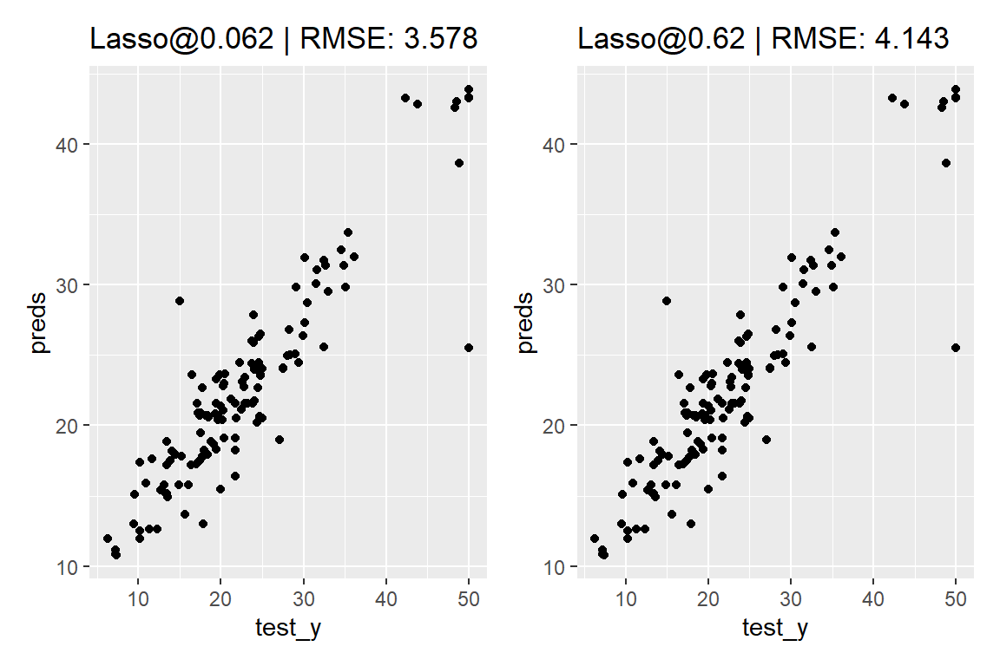
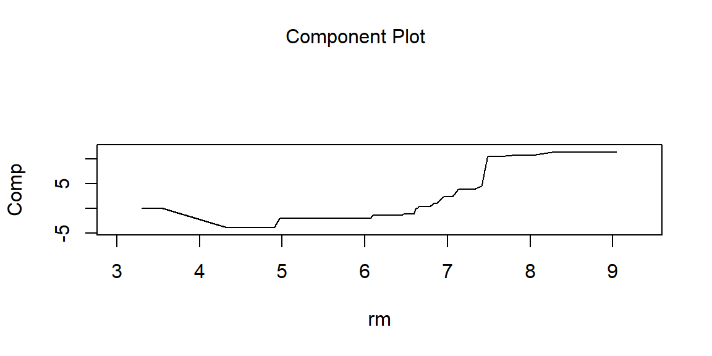
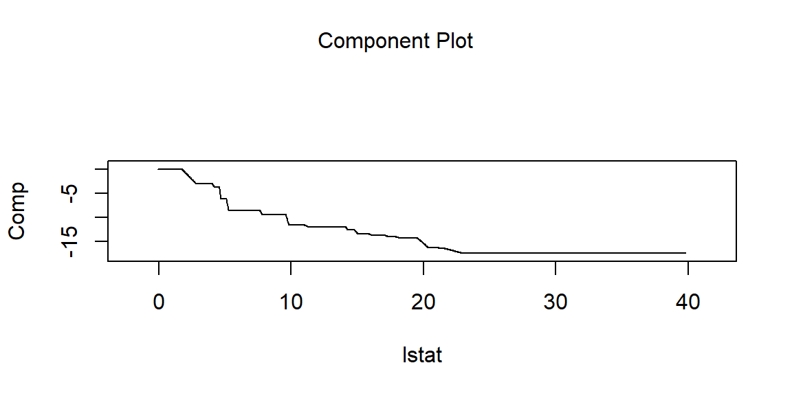
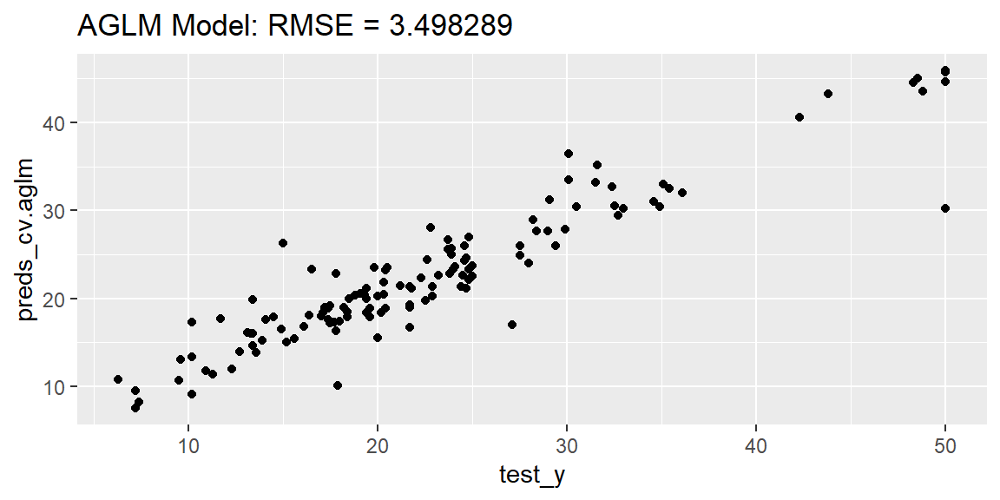
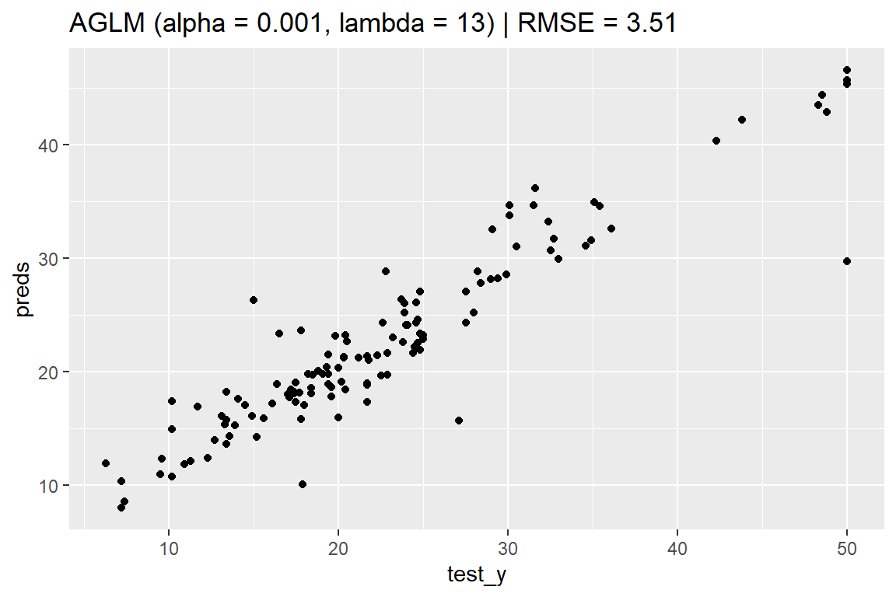

library(ggplot2)
library(MASS) # Bostonデータセットを利用します
set.seed(42)
# 学習用データと評価用データを分割します。
split_data <- rsample::initial_split(Boston)
# 学習用データを説明変数（デザイン行列）と目的変数に分割します。
train <- rsample::training(split_data)
train_X <- dplyr::select(train, -medv)
train_y <- train$medv
# 評価データを説明変数と目的変数に分割します。
test <- rsample::testing(split_data)
test_X <- dplyr::select(test, -medv)
test_y <- test$medv2 aglm
2.1 パッケージの概要
aglm パッケージは、Accurate Generalized Linear Model (AGLM) を実装したパッケージです。AGLM は、加法的モデルの枠組にとどまることで一定の解釈性を維持しながら、目的変数と予測変数の間の非線形な関係を表現することで予測精度の向上もねらうことのできる予測モデルです。
2.2 AGLM モデルを構築する
aglm関数の第1引数 x に説明変数（デザイン行列）を渡し、第2引数 y に目的変数を渡すことで、AGLMを学習させることができます。また、predict 関数の引数 newx に新たなデータを渡せば、そのデータに対する予測が出力されます。
library(aglm)
model_aglm <- aglm(
x = train_X,
y = train_y,
alpha = 1 # 正則化項のαパラメーターを指定（デフォルトは1）
)
preds_aglm <- predict(
object = model_aglm,
newx = test_X,
s = 0.1 # 正則化項のλパラメーターを数値またはベクトルで指定
) |> c() # 行列形式の出力をベクトルに変換
rmse_ = yardstick::rmse_vec(test_y, preds_aglm)
ggplot(mapping = aes(x = test_y, y = preds_aglm)) +
geom_point() +
labs(title = paste("AGLM Model: RMSE =", round(rmse_, 6)))
2.2.1 参考情報
AGLMの学習における正則化項は次の式で与えられます。
\[R(\{\beta_{jk}\};\lambda, \alpha)=\lambda\{(1-\alpha)\sum_j\sum_k|\beta_{jk}|^2+\alpha\sum_j\sum_k|\beta_{jk}|\}\]
\(\alpha\) はL1正則化とL2正則化のバランスを決めるパラメーターです。この形式の正則化項について、\(\alpha=1\) の場合をラッソ、\(\alpha=0\) の場合をリッジ、\(0<\alpha<1\) の場合をエラスティックネットと呼びます。また、λ は正則化項の影響度を決めるパラメーターで、この値が大きいほど、回帰係数の値が小さく抑えられるようになります。
さて、AGLMでは、正則化項の λ パラメーターを指定しない場合、デフォルトの設定では100通りの λ の値に対して計算が行われます。
lambdas = model_aglm@backend_models$glmnet$lambda
length(lambdas)[1] 100lambdas[1:5][1] 6.636452 6.334815 6.046888 5.772047 5.509699lambdas[96:100][1] 0.07993630 0.07630307 0.07283498 0.06952452 0.06636452AGLMに predict() 関数を適用した場合の出力は、引数 s に渡した λ パラメーターごとの予測値を 1 列として、行列形式で出力されます λ の値を指定しない場合は、すべての λ に対して予測が行われ、その結果が100列の行列として返されます。
predict(model_aglm, newx = test_X) |> ncol()[1] 100また、λ パラメーターの値ごとに、学習の結果ゼロ以外の値になった回帰係数の数も記録されています。AGLM では、非線形性を表現するために取り入れた工夫の影響で、推定される回帰係数の数（最大116）が、学習データに含まれる説明変数の数（13）よりも多くなります。
dfs = model_aglm@backend_models$glmnet$df
length(dfs)[1] 100dfs[1:5][1] 0 1 1 2 2dfs[96:100][1] 114 114 115 116 116なお、AGLM では、非線形性を表現するために取り入れた工夫の影響で、推定される回帰係数の数（最大116）が、学習データに含まれる説明変数の数（13）よりも多くなります。この工夫の詳細については、AGLM の紹介論文をご参照ください。
また、\(\alpha\) パラメーターが0でない場合、\(\lambda\) が一定値を超えるとすべての回帰係数がゼロになります。このとき、AGLM の予測関数は、説明変数の値によらずに目的変数の平均値を出力します。
mean(train_y)[1] 22.44828predict(model_aglm, newx = test_X,
s = c(10, lambdas[1], lambdas[10])) |> head(3) s1 s2 s3
[1,] 22.44828 22.44828 21.98585
[2,] 22.44828 22.44828 20.34891
[3,] 22.44828 22.44828 21.18687# 第1列（s1）はlambdas[1]以上の値を指定2.3 特徴量ごとの効果を可視化する
構築した AGLM モデルを plot() 関数に渡すことで、特徴量ごとの予測値への影響を可視化することができます。
plot(model_aglm,
s = 0.1, # λ パラメータを指定
vars = c("lstat", "rm"), # 可視化の対象とする特徴量を指定
ask = FALSE, verbose = FALSE, layout = c(1, 1) # 出力方法の設定
)

2.4 最適な λ を探索しながら AGLM モデルを構築する
AGLM パッケージは、ベースになっている glmnet パッケージの機能を数多く継承しており、たとえば cv.aglm() 関数を用いることで、λ のチューニングを自動で行うことが可能です。
lambda_candidates = seq(from = 30, to = 0, by = -0.2)
model_cv.aglm <- cv.aglm(
x = train_X,
y = train_y,
alpha = 0.1, # 正則化項のαパラメーターを指定（デフォルトは1）
lambda = lambda_candidates, # lambda の候補を指定
nfolds = 5 # クロスバリデーションの分割数を指定
)model_cv.aglm@lambda.min # αを変えたことで最適なλの水準も変化[1] 1preds_cv.aglm <- predict(model_cv.aglm,
newx = test_X,
s = model_cv.aglm@lambda.min)
rmse_ = yardstick::rmse_vec(test_y, preds_cv.aglm[, 1])
ggplot(mapping = aes(x = test_y, y = preds_cv.aglm)) +
geom_point() +
labs(title = paste("AGLM Model: RMSE =", round(rmse_, 6)))
2.5 最適な λ, α を探索しながら AGLM モデルを構築する
また、同様に cva.aglm() 関数を用いることで、λ と α のチューニングを自動で行うこともできます。
lambda_candidates = seq(from = 30, to = 0, by = -0.2)
models_cva.aglm <- cva.aglm(
x = train_X,
y = train_y,
lambda = lambda_candidates, # lambda の候補を指定
nfolds = 5 # クロスバリデーションの分割数を指定
)models_cva.aglm@alpha.min # 最適なα
idx <- models_cva.aglm@alpha.min.index # 最適なαのインデックス番号
model_cva.aglm <- models_cva.aglm@models_list[[idx]] # 最適なαによるモデル
preds_cva.aglm <- predict(model_cva.aglm,
newx = test_X,
s = model_cva.aglm@lambda.min)
rmse_ = yardstick::rmse_vec(test_y, preds_cva.aglm[, 1])
ggplot(mapping = aes(x = test_y, y = preds_cv.aglm)) +
geom_point() +
labs(title=paste("AGLM Model: RMSE =", round(rmse_, 6)))